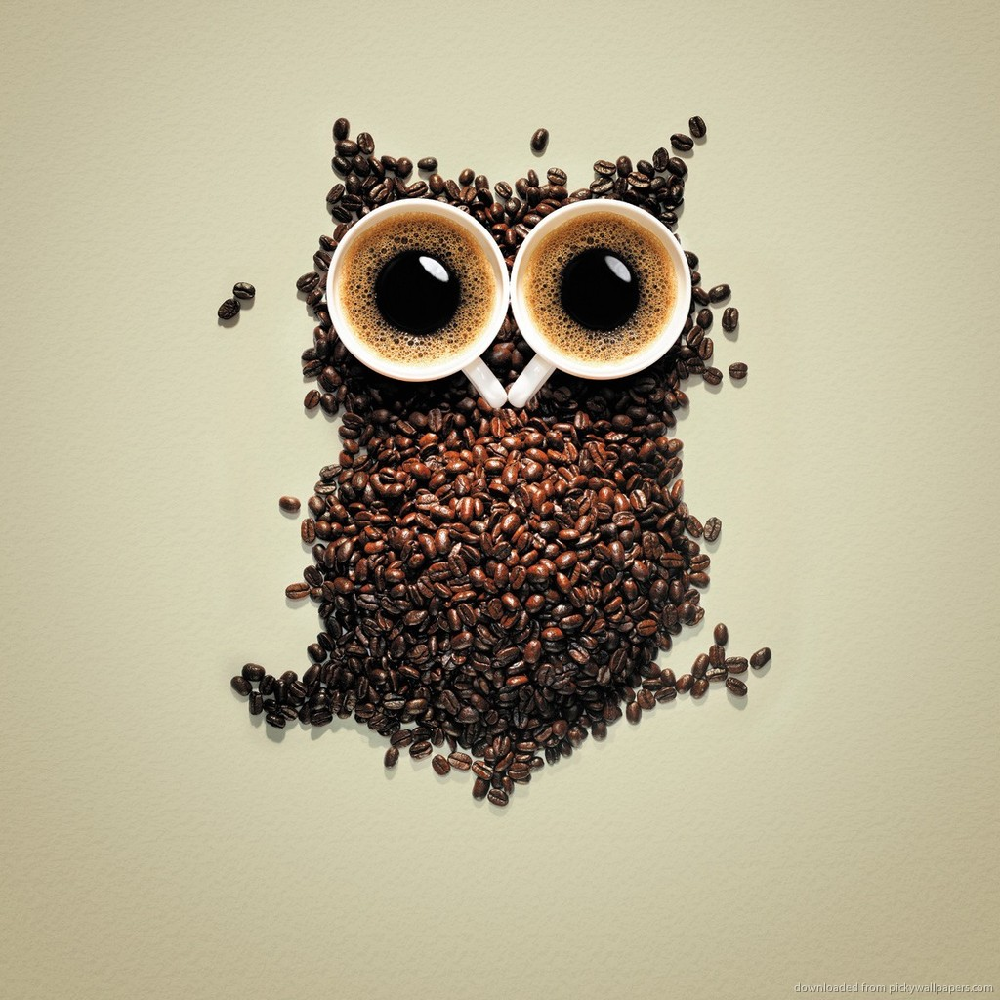
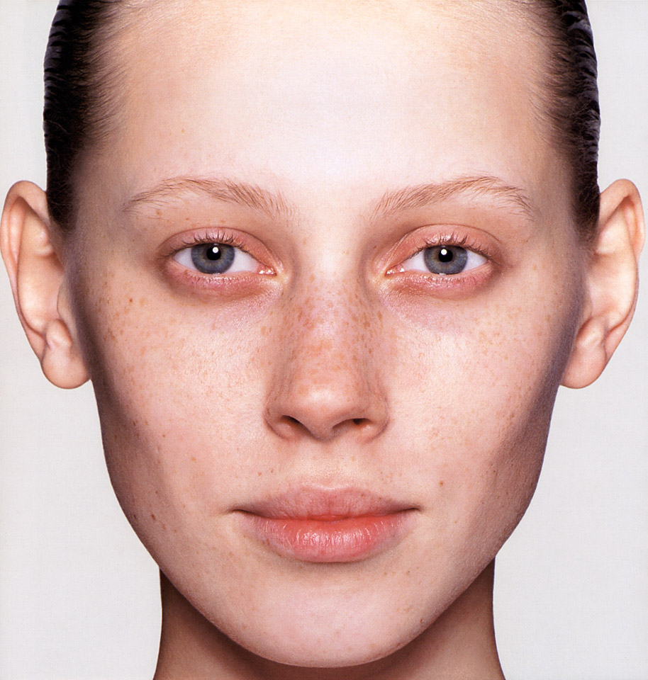
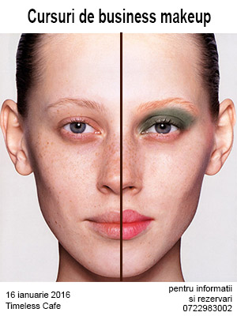
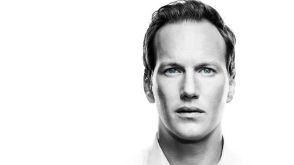
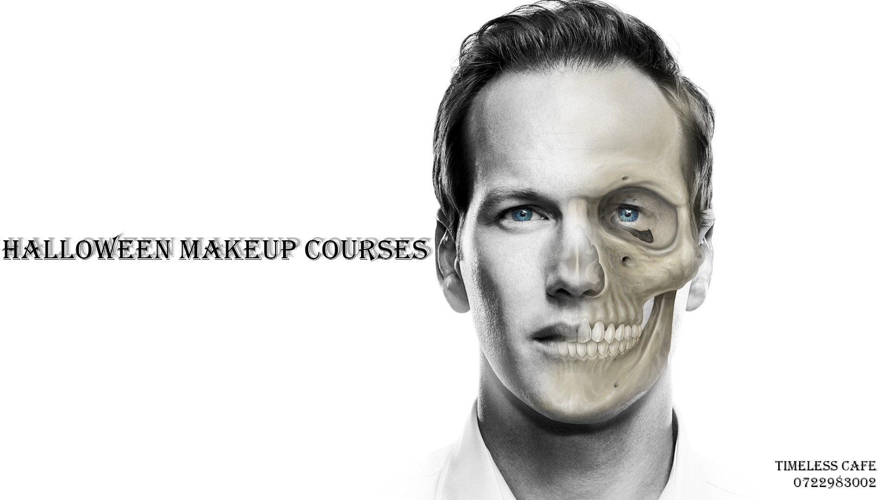
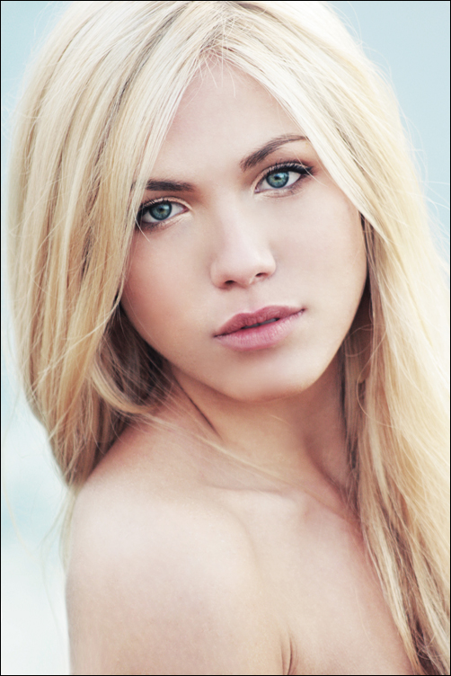
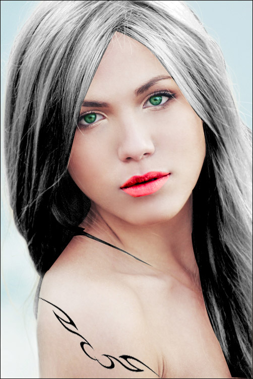

Majoritatea fotografiilor de pe acest site au fost preluate de pe internet si
apoi editate in photoshop (pentru redimensionari, schimbari de culoare, cropuri,
selectii eliptice, adaugare de text peste imagine etc). Voi prezenta in cele ce
urmeaza cum am editat doar 3 fotografii + bannerul.
Bannerul
Inainte:
 Dupa:
Am
selectat dimensiunea bannerului si am creat un fisier nou. Prin drag and drop am
pus fotografia cu bufnita si am redimenionat-o. Cu eye dropper si Paint bucket
am copiat imaginea de pe fundalul pozei originale si am pus-o pe tot bennerul,
si am folosit un brush tool pentru a ascunde trecerea (poza originala avand un
fundal foarte usor in gradient, dar se vedea o diferenta cand am copiat
culoarea). Am scris textul si i-am adaugat cateva efecte. Am adaugat o alta
fotografie in photoshop care continea logo-ul dorit, cu magic wand am selectat
logo-ul, l-am copiat in banner, acesta fiind scris cu alb i-am dat Invert
deoarece il voiam cu negru si apoi i-am redus opacitatea. Am folosit rigla
pentru a imi pastra distant egala intre margini.
Imaginea 1:
Inainte

Dupa:

Am realizat o selectie pe jumatate din fotografie si
am facut un layer mask. Din create new fill or adjustment layer am facut niste
adjustmenturi la imagine pana cand am ales o culoare dorita, apoi am creat o
alta masca. Am dat invert iar apoi, cu brushul alb la opacitate maxima am
realizat machiajul adaugand cateva efecte de culoare (multiply, feather etc).
Din liquify am marit buzele. Apoi am selectat buzele, le-am facut o copie carora
le-am schimbat culoarea din adjustments. Cu spot healing brush am eliminat o
parte din pistrui . Pentru blush-ul din obraji am creat o alta masca dupa ce am
folosit fill- foreground color. Acelasi lucru l-am facut si pentru sprancene. Am
copiat apoi imaginea intr-un alt document, unde am scris textul si i-am adaugat
efecte de text
Imaginea 2
Inainte:
 Dupa:

Am pus
fotografia cu craniul peste fotografia cu barbatul folosind Magic Want pentru
a lua conturul si a scoate
spatiile goale din fundal. Am asezat-o exact pe fata barbatului.
Am creat o masca si am ascuns cu Hyde all imaginea iar apoi, cu paint
brush am inceput sa scot la iveala parti din masca. Am adaugat apoi text pe
imagine si cateva efecte si am schimbat backgroundul cu gradient tool.
Imaginea 3
Inainte:

Dupa:

Am
selectat pe rand ochii, buzele si parul si le-am modificat cu adjustments. Am
copiat apoi cu Magic Wand dintr-o alta fotografie tatuajul, pe care l-am asezat cu Transform pe bratul fetei. Am adaugat apoi scris pe fotografie.
Copywright @ 2015 Timeless Cafe | Powered by Dermengiu Raluca